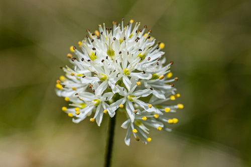

Tofieldiaceae
False Asphodel Family
Tofieldiaceae is a small family of monocotyledonous flowering plants in the order Alismatales. It comprises 3-4 genera and about 20-30 species of perennial herbs. These plants typically grow in cold, wet habitats like bogs, fens, and stream banks in the Northern Hemisphere and the Andes. They are characterized by their basal, equitant (iris-like) leaves, small 3-merous flowers in racemes or spikes often with a calyculus, and fruit usually a capsule or group of follicles. Recent discoveries have shown protocarnivory in one species.
Overview
The False Asphodel family, Tofieldiaceae, represents a distinct lineage within the early-diverging monocot order Alismatales, an order primarily known for aquatic and wetland plants. Tofieldiaceae species are typically found in nutrient-poor, wet, often cold environments of the Northern Hemisphere (circumboreal distribution) and extending south into the Andes mountains.
These herbaceous perennials grow from rhizomes and are recognizable by their basal clusters of linear, iris-like leaves (equitant and distichous). They produce small, generally white or greenish flowers arranged in a terminal spike or raceme on a leafless stalk. A notable recent discovery (2021) revealed that at least one species, Triantha occidentalis, is protocarnivorous, trapping small insects on sticky glandular hairs on its flowering stalk, likely as a way to supplement nutrient uptake (especially phosphorus) in poor soils without harming its pollinators.
The family has little economic importance but is significant for understanding the diversity and evolution within the Alismatales order and for the surprising discovery of carnivory in a group not previously suspected of it.
Quick Facts
- Scientific Name: Tofieldiaceae
- Common Name: False Asphodel family
- Number of Genera: Approximately 3-4 (Tofieldia, Triantha, Pleea, sometimes Harperocallis)
- Number of Species: Approximately 20-30
- Distribution: Circumboreal (N. Hemisphere), Andes (S. America); typically in cold, wet habitats (bogs, fens, stream banks).
- Evolutionary Group: Monocots - Alismatales
Key Characteristics
Habit and Rhizome
Plants are perennial herbs growing from a short or creeping rhizome, often forming clumps.
Leaves
Leaves are mostly basal, linear or sword-shaped (ensiform), and characteristically equitant (overlapping at the base and flattened in the same plane, like an iris leaf). They are arranged in two ranks (distichous). Venation is parallel.
Inflorescence
Flowers are borne in a terminal raceme (flowers stalked) or spike (flowers sessile) on a generally leafless stalk (scape). The scape may bear glandular hairs in some species (e.g., Triantha).
Flowers
Flowers are small, typically bisexual, and radially symmetrical (actinomorphic). They are usually subtended by bracts. Often, 1-3 bracteoles are present just below the flower, sometimes fused into a cup-like structure called a calyculus.
- Perianth: Composed of 6 distinct (free) tepals arranged in two similar whorls of 3 (3+3). Tepals are petal-like (petaloid), usually white, greenish, or yellowish, and typically persistent in fruit.
- Androecium: Usually 6 stamens (rarely 3 or 9), distinct, arranged in two whorls opposite the tepals. Anthers are often basifixed or versatile, dehiscing via longitudinal slits.
- Gynoecium: The ovary is superior (usually) or rarely half-inferior. It consists of 3 (rarely 4) carpels that are either entirely distinct (apocarpous) or fused only at the base (syncarpous below). There are 3 (or 4) distinct, short styles, each with a small stigma. Ovules are numerous in each carpel/locule, with marginal or axile placentation.
Fruits and Seeds
The fruit is typically a dry, dehiscent capsule, either a septicidal or loculicidal capsule if carpels are fused, or an aggregate of follicles if carpels are distinct. The persistent tepals and sometimes the calyculus surround the mature fruit.
Seeds are numerous, small, and sometimes have tail-like appendages or wings.
Field Identification
Identifying Tofieldiaceae requires recognizing the combination of monocot features, specific leaf arrangement, flower structure, and habitat preference:
Primary Identification Features
- Monocot Herb Habit: Grass-like or iris-like herbaceous plants.
- Basal, Equitant Leaves: Linear leaves overlapping flatly in two ranks at the base (like an iris).
- Terminal Raceme or Spike: Flowers clustered at the top of a leafless scape.
- 3-merous Flowers: Flowers with parts typically in threes (6 tepals, 6 stamens, 3 carpels/styles).
- 6 Free, Petaloid Tepals: Usually white, greenish, or yellowish.
- Superior Ovary with 3 Carpels/Styles: Carpels often distinct or only fused at the base.
- Calyculus Often Present: Small bracteoles forming a cup below the flower.
- Habitat: Cold, wet environments (bogs, fens, wet meadows, stream banks).
Secondary Identification Features
- Rhizomatous Growth: Often forming clumps.
- Parallel Venation: Typical for monocots.
- Persistent Tepals in Fruit: Dried tepals often surround the capsule/follicles.
- Glandular Hairs on Scape: Present in some Triantha species (sticky).
Seasonal Identification Tips
- Flowering Season: Typically summer in temperate/boreal regions.
- Fruiting Season: Capsules/follicles develop after flowering.
- Vegetative State: The basal, equitant leaves are a key feature year-round when not covered by snow.
Common Confusion Points
- Juncaceae (Rush Family): Also monocots often in wet habitats with 6 tepals and capsular fruit. However, Juncaceae leaves are typically channeled, round, or flat but not equitant, flowers are often brownish/greenish and less petaloid, and carpels are fully fused into a single pistil.
- Liliaceae sensu lato / Melanthiaceae: Some members might have racemes and 6 tepals, but leaves are typically not equitant, and ovary structure (fully syncarpous) often differs. Found in various habitats.
- Iridaceae (Iris Family): Have equitant leaves, but flowers are much larger, more complex, have only 3 stamens, and possess an inferior ovary.
- Xyridaceae (Yellow-eyed Grass Family): Also in wet habitats with basal leaves and flowers in heads/spikes, but flowers are typically yellow, 3-merous in a different way (3 sepals, 3 petals, often only 3 fertile stamens), and ovary structure differs.
Field Guide Quick Reference
Look For:
- Monocot herb (wet, cold habitats)
- Basal, equitant leaves (iris-like)
- Flowers in terminal raceme/spike
- 6 free, petaloid tepals (white/greenish)
- 6 stamens
- Superior ovary, 3 distinct/basally fused carpels/styles
- Calyculus often below flower
- Fruit a capsule or follicles
Key Distinctions:
- vs. Juncaceae: Tofieldiaceae has equitant leaves, often more petaloid tepals, distinct/basally fused carpels.
- vs. Iridaceae: Tofieldiaceae has superior ovary, 6 stamens.
- vs. Liliaceae s.l.: Tofieldiaceae has equitant leaves, often distinct/basally fused carpels.
Notable Examples
Tofieldiaceae includes several genera characteristic of northern or montane wetlands:

Tofieldia pusilla
Scottish Asphodel, Scotch Asphodel
A small herb found in arctic and alpine bogs and wet tundra across the Northern Hemisphere. Has short basal leaves and a dense spike-like raceme of small greenish-white flowers, often with a distinct calyculus.

Triantha glutinosa
Sticky False Asphodel
Found in calcareous fens and wet meadows across northern North America. Recognizable by the sticky, glandular hairs covering the upper part of the flowering scape below the raceme of white flowers.

Triantha occidentalis
Western False Asphodel
Native to western North America, growing in bogs and wet areas. This species gained attention for the discovery of its protocarnivorous nature, trapping insects on its sticky flowering stalks to absorb nutrients, particularly phosphorus.

Pleea tenuifolia
Rush Featherling
A rare species endemic to the coastal plain wetlands of the southeastern United States. Characterized by very narrow, rush-like leaves and white flowers in a raceme. Represents a distinct genus within the family.
Phylogeny and Classification
Tofieldiaceae is classified in the order Alismatales, which represents one of the earliest diverging lineages within the monocots. This order is highly diverse, containing mostly aquatic and wetland plants, including families like Araceae (aroids), Alismataceae (water plantains), and Potamogetonaceae (pondweeds).
Molecular phylogenetic studies consistently place Tofieldiaceae as the sister group to the large and diverse family Araceae, or sometimes as sister to all other Alismatales except Araceae. Its position near the base of the Alismatales highlights its ancient origins and retention of some features considered ancestral within the order (like a less specialized floral structure compared to Araceae). The family's primarily Northern Hemisphere, cold-climate distribution contrasts with the largely tropical distribution of many other basal Alismatales lineages.
Position in Plant Phylogeny
- Kingdom: Plantae
- Clade: Angiosperms (Flowering plants)
- Clade: Monocots
- Order: Alismatales
- Family: Tofieldiaceae
Evolutionary Significance
Tofieldiaceae is evolutionarily significant for several reasons:
- Basal Position in Alismatales: Its phylogenetic placement provides insights into the early evolution and ancestral characteristics of this major monocot order.
- Biogeography: Its predominantly circumboreal/Andean distribution contrasts with many other Alismatales, suggesting a complex history of diversification and dispersal possibly linked to past climate changes.
- Morphological Simplicity: Retains relatively simple floral features (e.g., free tepals, often apocarpous/basally syncarpous gynoecium) compared to some highly specialized relatives like Araceae.
- Discovery of Protocarnivory: The recent finding of sticky trap carnivory in Triantha highlights that novel ecological strategies can evolve in unexpected lineages and demonstrates the potential for ongoing discovery even in well-studied floras.